‘Understanding Intelligence’ Workshop 2023
研究記録・アーカイブの詳細は英語原文で掲載しています。
Archived project or event page. Dates and roles describe the original activity.
MANY THANKS TO ALL WHO ACCEPTED OUR INVITATION AND TOOK PART IN THE WORKSHOP!
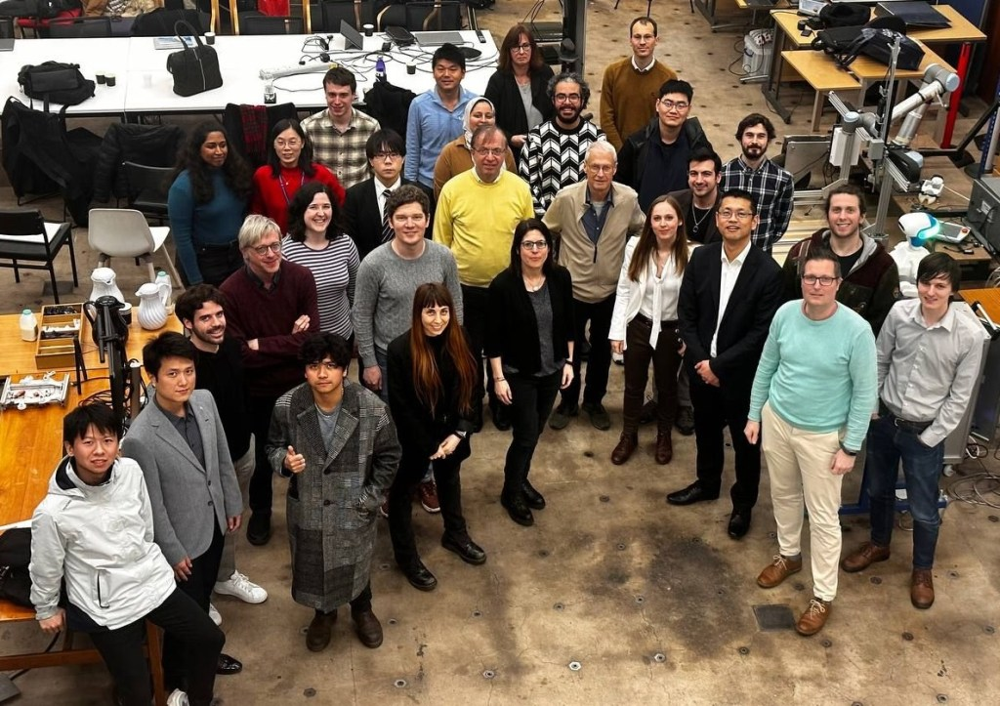
When: 21-22 February 2023
Where: OHMC, Department of Engineering, University of Cambridge
Hosted by: the Bio-Inspired Robotics Laboratory
Local Organisers: Prof Fumiya Iida, Dr Arsen Abdulali
Enquiries: Mrs Veronica Egorova
The ‘Understanding Intelligence’ workshop is organised by the Bio-Inspired Robotics Laboratory, Department of Engineering, University of Cambridge and it aims to provide a platform for scientific discussions about Artificial and Embodied Intelligence and to celebrate 20 years since the seminal conference on Embodied Artificial Intelligence followed by the publication of the highly influential textbook of ‘Understanding Intelligence’ published by the MIT Press.
We are inviting prominent academics who have been involved in that conference and contributed extensively to the development of AI and EI fields and discuss the challenges and perspectives that might emerge on the frontiers of AI, EI and Robotics research in the near future.
Programme
DAY 0: 20 February 2023
| 18:00 – 21:00 | Welcome drink/dinner at The Eagle |
DAY 1: 21 February 2023
| 12:00 – 13:00 | Registration Lunch and Demonstrations |
| 13:00 – 13:15 | Opening Remarks: Fumiya Iida |
| 13:15 – 13:30 | Keynote 1: Verena Hafner |
| 13:30 – 13:45 | Keynote 2: Shuhei Miyashita |
| 13:45-14:00 | Keynote 3: Daniel Polani |
| 14:00 – 14:30 | Coffee Break |
| 14:30 – 14:45 | Keynote 4: Helmut Hauser |
| 14:45 – 15:00 | Keynote 5: Perla Maiolino |
| 15:00-15:15 | Keynote 6: Thrish Nanayakkara |
| 15:15-15:30 | Keynote 7: Josie Hughes |
| 15:30-16:30 | Panel Discussion Panelists: Rolf Pfeifer, Fulvio Forni, and more |
| 16:30 – 17:00 | Robot Demonstrations and Networking session |
| 17:00 – 18:30 | Settling into accommodation |
| 18:30 – 22:00 | Formal Dinner (invitation only) or Cambridge Pub session: The Granta |
DAY 2: 22 February 2023
| 07:30 – 09:00 | Breakfast |
| 09:00 – 11:00 | Departure |
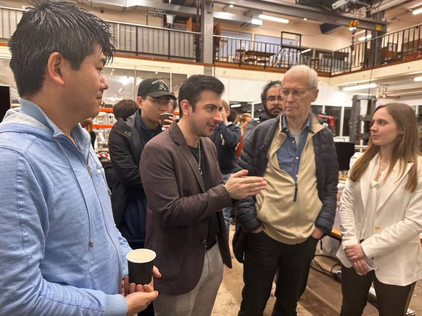
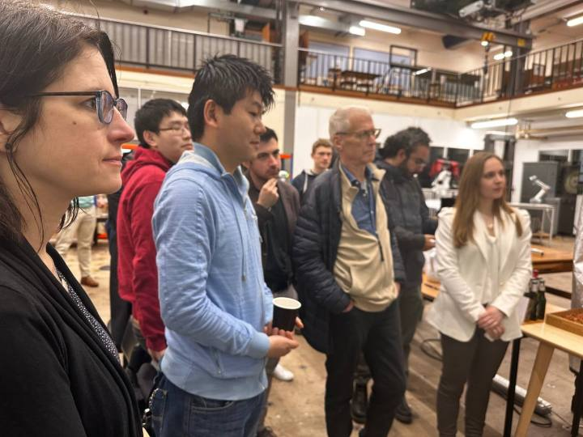
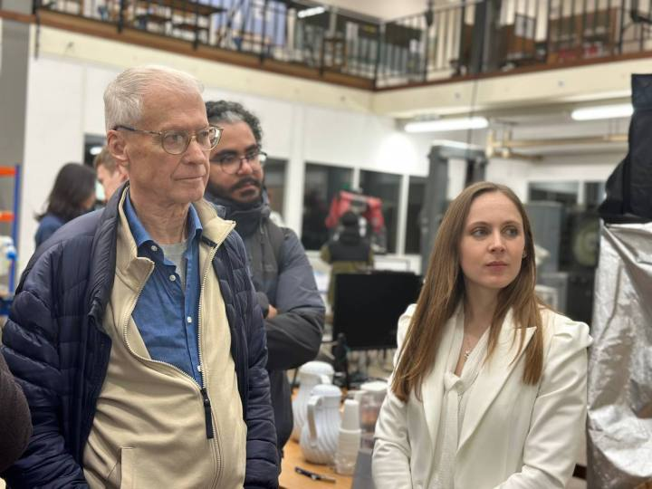
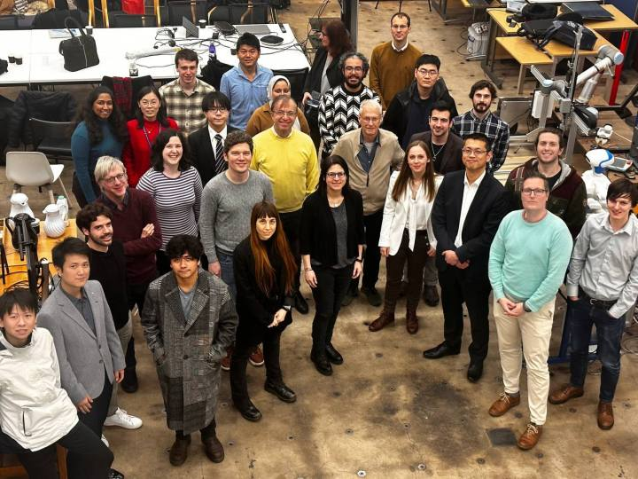
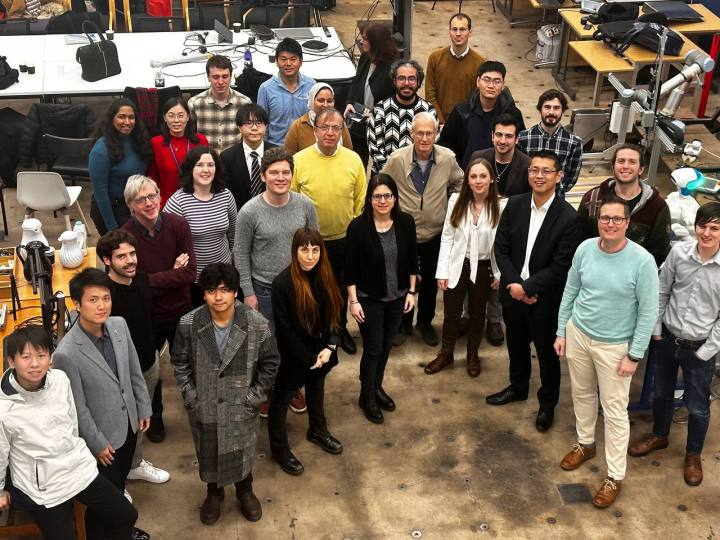
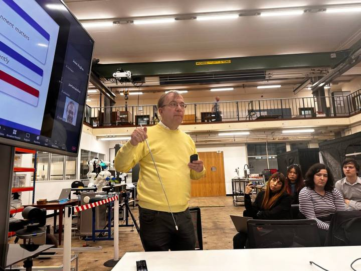
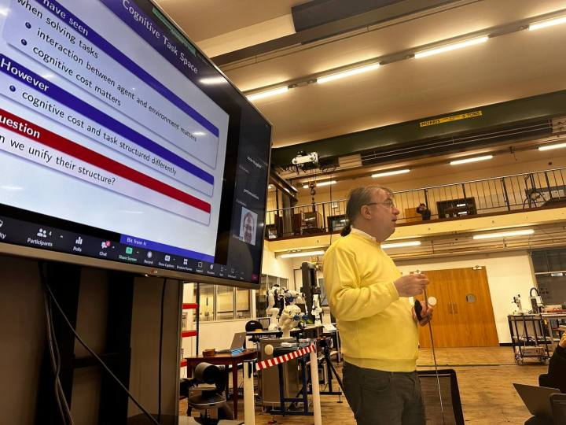
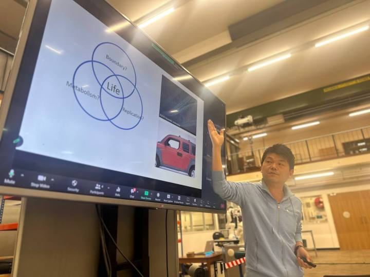
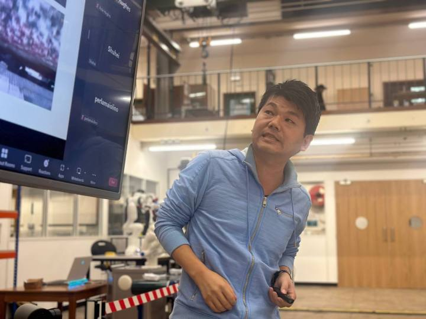
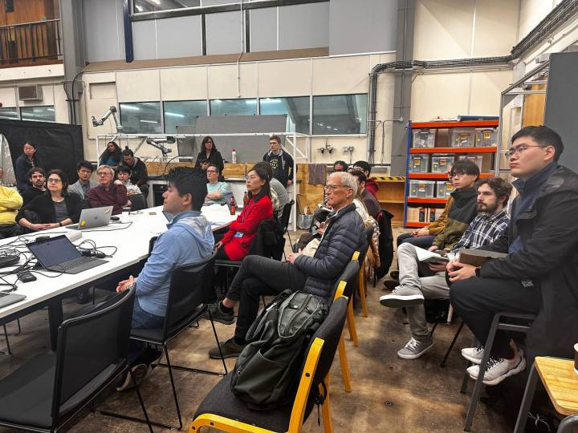
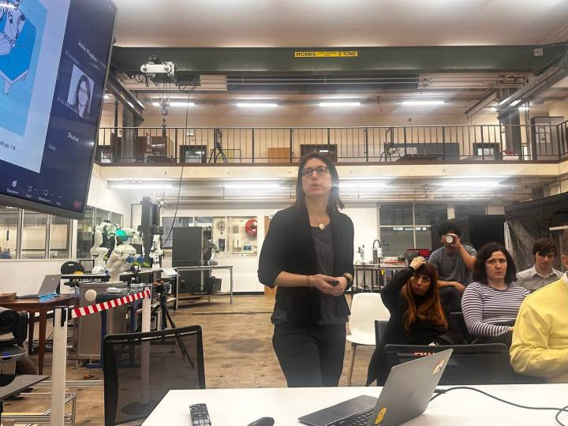
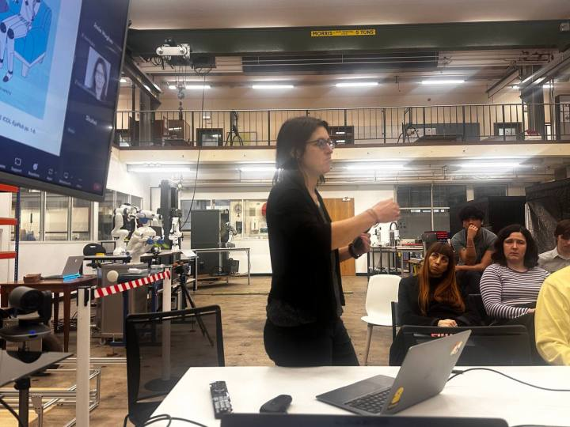
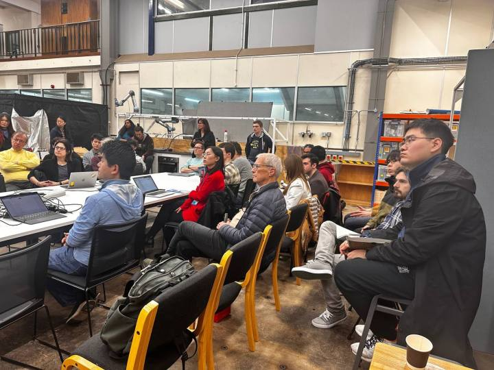
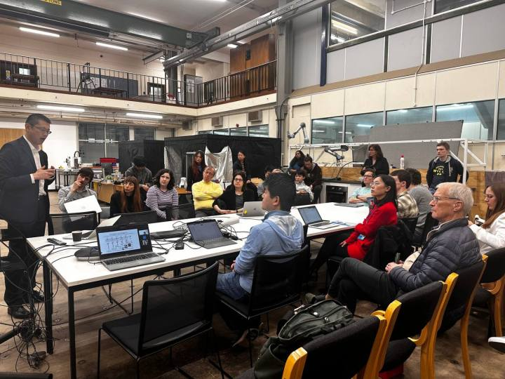
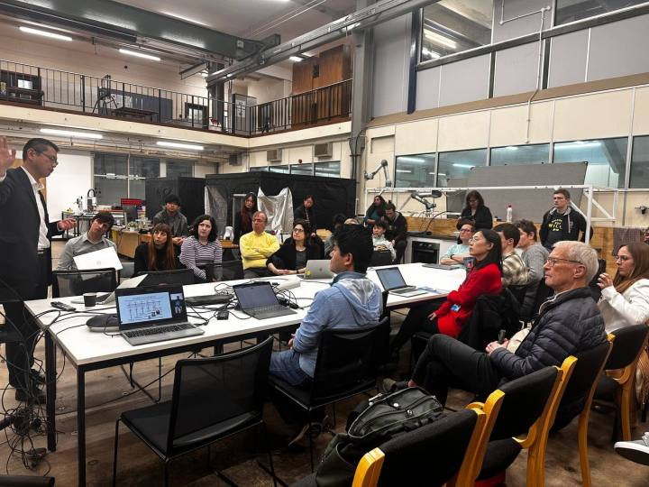
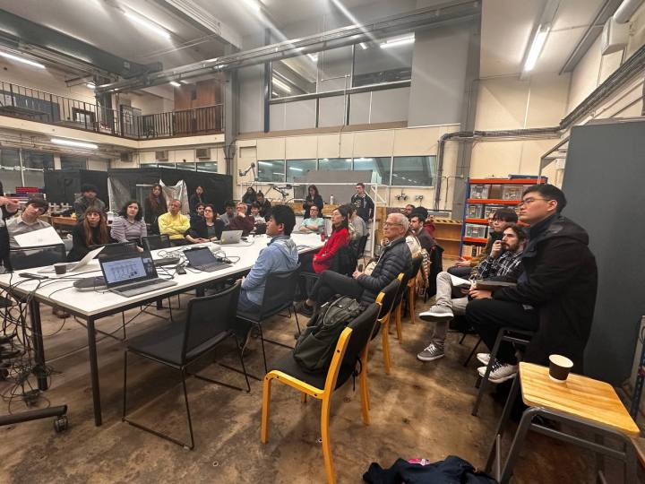
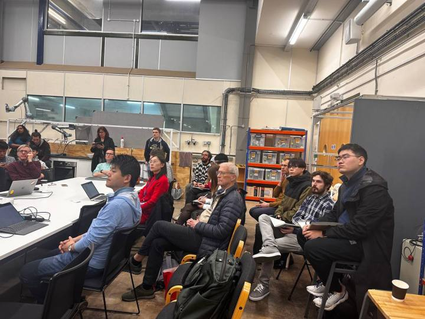
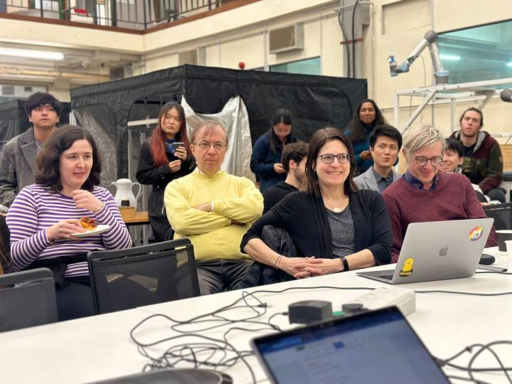
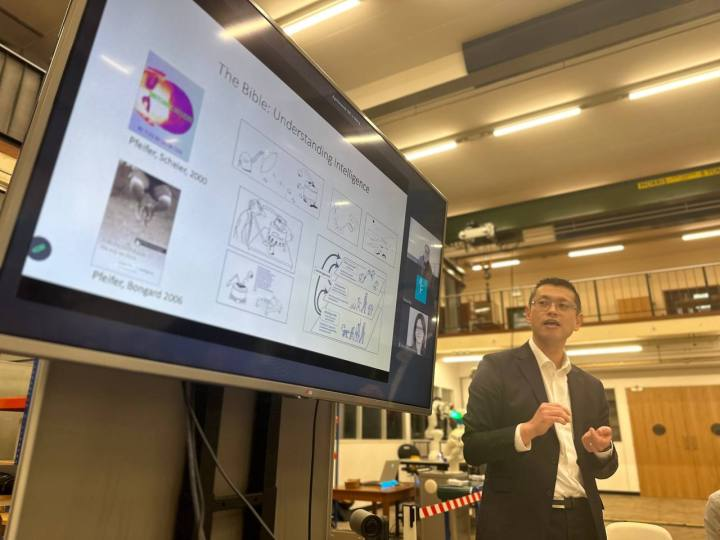
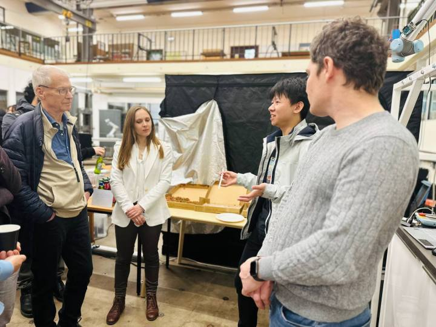